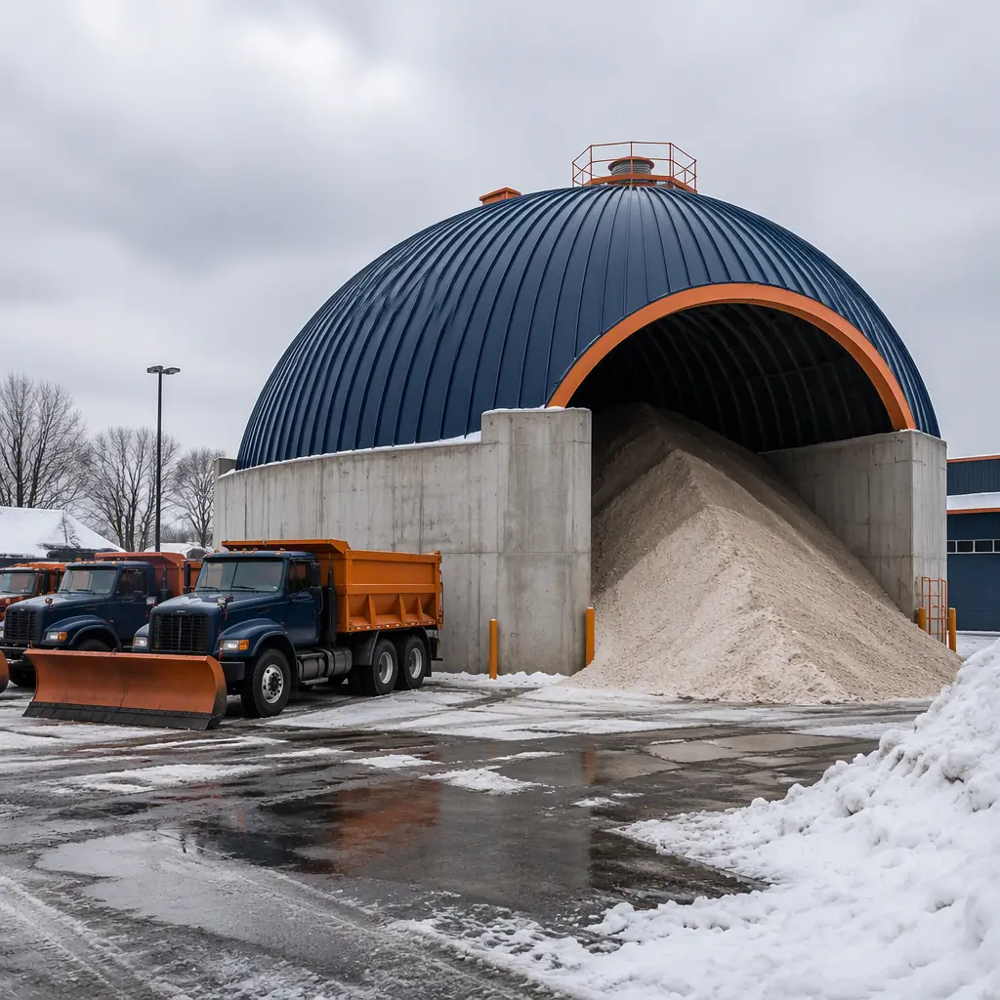
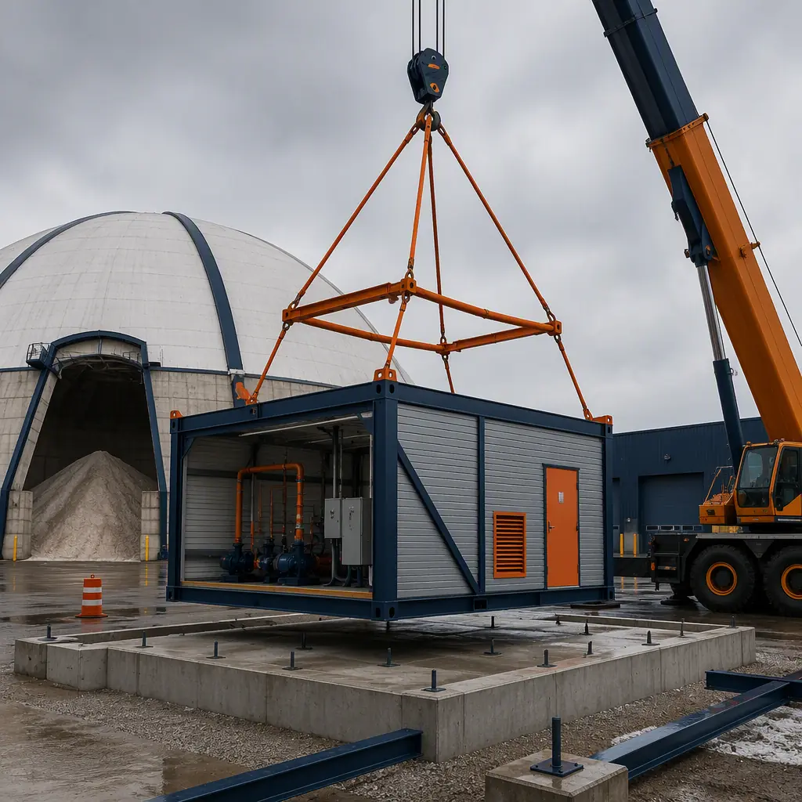
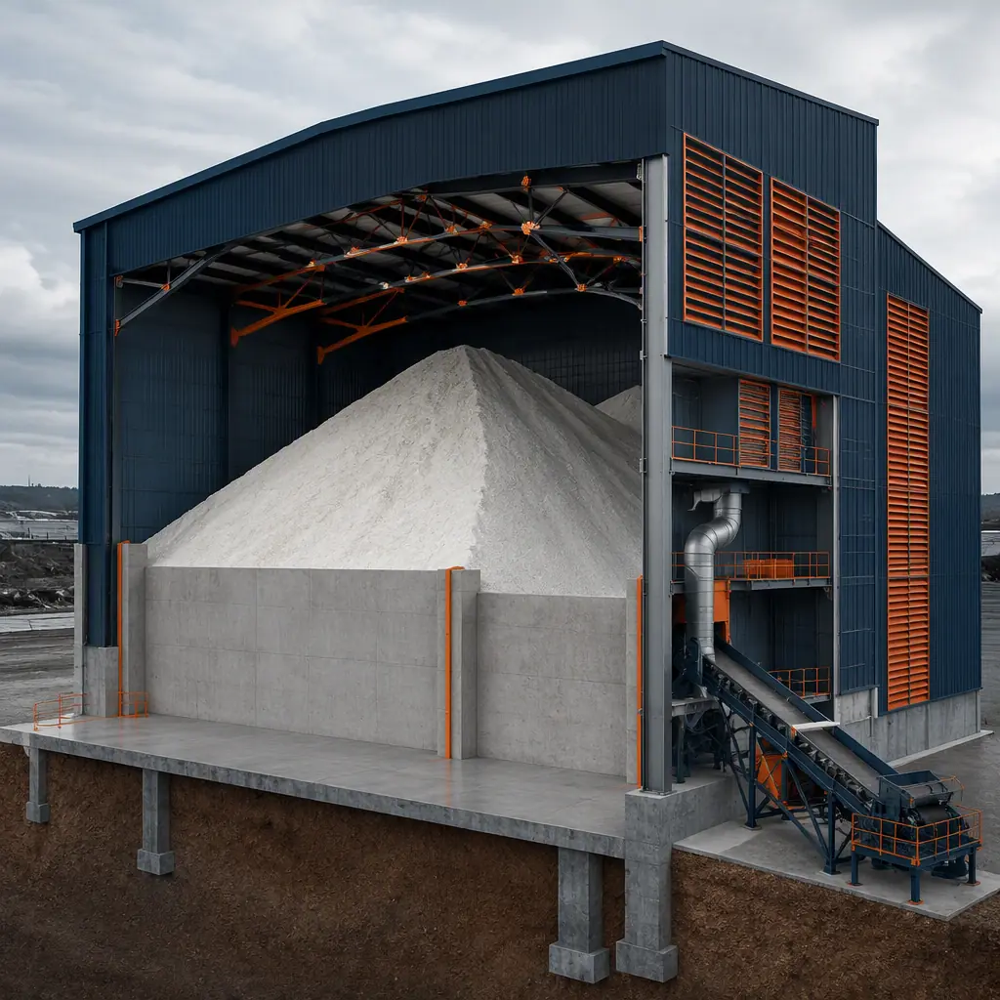
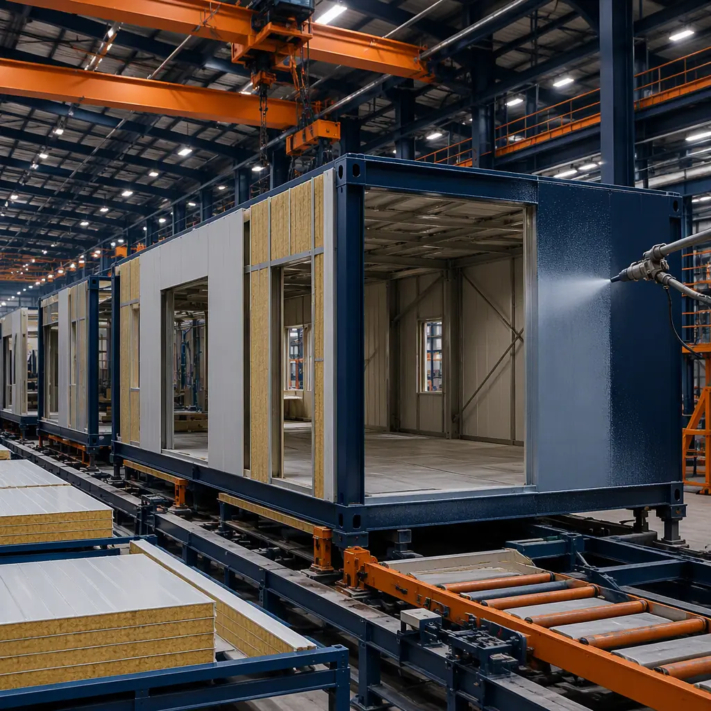

Winter maintenance is a race against the calendar, and the buildings that support it are too often an afterthought. A municipality or state DOT that runs out of salt mid-season — or watches a poorly protected salt pile leach into the groundwater — pays for it in road safety, environmental fines, and equipment downtime. The supporting infrastructure is substantial: a mid-size county fleet of 40–60 plow trucks needs 5,000–15,000 tons of salt storage, a brine production building, heated vehicle shelters, and a maintenance depot — roughly $4–9 million of facilities that must be delivered before the first snowfall. Modular prefabricated construction builds these as factory-assembled steel-frame structures with corrosion-resistant detailing, delivered and set in a single construction season. This guide covers the winter maintenance building package, the material-handling engineering that salt storage demands, and how modular delivery fits municipal procurement cycles. For the broader municipal building pattern, see our modular government and municipal buildings guide.

The Winter Maintenance Building Program
A complete winter maintenance facility is a campus of specialized structures, each with its own engineering demands:
- Salt storage buildings. The core asset — a covered structure sized for 3,000–15,000 tons of road salt, with engineered containment to keep brine from reaching soil and groundwater. Salt is aggressively corrosive and hygroscopic: it absorbs moisture, forms a brine slurry, and attacks unprotected steel, concrete, and electrical systems.
- Brine production and liquid storage buildings. Anti-icing programs increasingly use liquid brine (typically 23% salt solution) instead of — or alongside — granular salt. Brine buildings house mixers, storage tanks, and load-out pumps in a corrosion-controlled environment.
- Vehicle shelters and maintenance bays. Plow trucks, spreaders, and loaders need heated or covered storage and service bays. These are industrial buildings with wash-down drainage, corrosion-resistant finishes, and overhead door systems sized for 12–14 ft equipment.
- Material handling infrastructure. Conveyors, load-out bins, and truck scales move salt from storage to spreaders; the building must integrate with this equipment without creating dust or moisture traps.

Engineering for Corrosion: Why Salt Buildings Are Different
Salt storage buildings fail faster than almost any other industrial structure when designed without corrosion in mind — unprotected steel framing can show section loss within 5–8 years, and concrete spalls where brine pools. Modular construction addresses this with factory-controlled corrosion engineering:
- Corrosion-resistant materials are specified at the factory. Hot-dip galvanized framing, stainless steel fasteners, epoxy-coated reinforcing in concrete containment walls, and fiberglass or PVC-clad interior liners are standard options for salt-contact surfaces. Factory fabrication means these details are consistent across every module — the same quality-control discipline covered in modular factory QC systems.
- Containment is engineered, not improvised. Environmental regulations require salt storage to capture brine runoff — a 10,000-ton pile can produce 100,000+ gallons of brine annually. Modular concrete containment walls and sealed floor systems are factory-built to the containment design, with drainage routed to a holding pond or recycling system rather than the storm drain.
- Ventilation manages moisture. Salt piles absorb moisture from humid air; a well-ventilated building with ridge vents and louvered walls keeps the pile dry and free-flowing. Modular wall and roof panels arrive with the ventilation system installed and dampers factory-set.
- Electrical systems are sealed. Lighting, controls, and motor starters in salt environments use sealed fixtures and corrosion-resistant enclosures; modular buildings arrive with this infrastructure factory-wired and tested.

The Modular Salt Storage Package
Modular delivery divides the winter maintenance program into factory-built structures that set in days rather than months:
Salt Storage Modules
Salt storage is delivered as a modular building system — precast or cast-in-place concrete containment walls form the perimeter (or the module package includes factory-built wall units), with a factory-fabricated steel dome or clear-span roof set on top. A 10,000-ton salt dome conventionally takes 4–6 months of site construction; the modular equivalent — factory-built roof segments, containment walls, and ventilation — can be erected in 4–6 weeks, with the structure ready for salt delivery the same season. The industrial warehouse pattern is covered in modular industrial warehouse construction.
Brine Production and Liquid Storage Buildings
Brine buildings arrive as factory-built modules with corrosion-resistant tank containment, mixing and pumping skids, and load-out infrastructure pre-installed. Because brine systems are MEP-dense — pumps, controls, and spill containment — the factory-build model delivers a tested, operational building that connects to power and water over a few days. The mechanical intensity parallels modular cold storage construction, which shares the same insulated-envelope and process-equipment engineering.
Vehicle Shelters and Maintenance Bays
Plow truck shelters and service bays use the industrial module package: clear-span interiors, oversized overhead doors, wash-down drainage with oil-water separation, and corrosion-resistant finishes throughout. A 6-bay maintenance facility that conventionally takes 8–12 months is delivered as modules set in 2–3 weeks, with the bay equipment — lifts, exhaust extraction, compressed air — factory-integrated. The fleet depot pattern is documented in modular transit and bus depot construction.
Support and Administration Modules
Crew rooms, dispatch offices, and restroom modules complete the campus. These use the standard commercial module package with the same corrosion-resistant detailing as the operational buildings, and can be deployed in the same crane schedule as the shelters — eliminating the second mobilization that conventionally follows a multi-building municipal project.

Environmental Compliance — Salt Storage Regulations
Salt storage sits under a tightening environmental compliance stack. State and federal regulators increasingly require covered storage and brine containment to protect groundwater: the US EPA's stormwater rules treat salt piles as industrial material with discharge potential, and many states (including the Great Lakes states, which have adopted model salt storage legislation) require 100% covered storage with engineered containment. Noncompliance is expensive — fines, cleanup orders, and public water-supply contamination. Modular buildings support compliance by making containment and coverage structural, documented facts: the containment wall design, liner system, and drainage routing are factory-engineered and delivered with as-built documentation for the regulator. The compliance documentation discipline is the same one we detail for permitting and zoning, and the environmental engineering pattern follows modular water and wastewater treatment facility construction.
Cost Structure — Modular vs. Conventional Winter Maintenance Facilities
| Cost Category | Conventional (10,000-ton Facility) | Modular (10,000-ton Facility) |
|---|---|---|
| Salt storage structure (dome + containment) | $1.2–2.0M | $0.95–1.6M (factory-built) |
| Brine production & liquid storage building | $0.6–1.1M | $0.45–0.85M (tested skids) |
| Vehicle shelters & maintenance bays (6-bay) | $1.5–2.6M | $1.15–2.0M |
| Site work, utilities & schedule risk | $0.7–1.2M | $0.35–0.6M |
| Total Facility Cost | $4.0–6.9M | $2.9–5.05M |
The 15–27% facility cost reduction compounds with a full construction season of schedule savings — decisive for a program that must be operational before the first snowfall. Municipal project economics are covered in our 2026 modular cost guide, and lifecycle maintenance costs in modular building lifecycle costs.
Siting & Operations: Designing the Winter Maintenance Campus
Where the buildings sit and how they work together determines whether a winter maintenance campus is efficient or a choke point during a storm event. The standard layout sequences the program by material flow: salt arrives by truck or rail at the storage structure, is moved to the load-out bin, and is transferred to spreaders as they stage for deployment; brine is produced alongside and loaded into tankers or spreader-mounted tanks; vehicles cycle through the maintenance bays on the way out of the yard. Modular delivery makes this choreography easier to plan because each building is a known, factory-fixed footprint — the campus layout is designed around modules whose dimensions are locked at the start of the project, so truck turning radii, loader clearances, and staging areas are coordinated on paper before any foundation is poured.
Three operational details separate well-run winter maintenance facilities from chronic bottlenecks. First, load-out speed: a 10,000-ton salt operation can move 200–400 tons per storm, and the building must accommodate conveyor or loader-based load-out without trucks queueing onto the public road — the site plan needs dedicated staging lanes. Second, drainage: the entire yard, not just the salt pad, must drain to containment, because brine tracks wherever vehicles drive; the modular package includes sealed pavement systems and drainage routing as part of the site design. Third, resiliency: the facility must keep operating through the same storm that it serves, which means the salt building, brine plant, and shelters need standby power and a layout that keeps access clear when snow accumulates. The operational planning for vehicle-intensive facilities is covered in modular transit and bus depot construction, and the durability engineering that keeps industrial buildings productive for decades is documented in modular industrial warehouse construction.
Phased Deployment & Multi-Site Municipal Programs
Winter maintenance programs are regional by nature — counties, DOT districts, and cities each need their own salt storage and depot capacity. Modular delivery supports both phasing and replication: a municipality can deploy the salt storage structure in year one and add brine production and vehicle shelters in year two as the program grows, and a state DOT can roll out identical facilities across districts with the same design package — cutting design time per site by 50–70% and standardizing maintenance training and spare parts. The phased-campus approach mirrors modular building additions and expansions, and the procurement path for public owners is covered in our RFP and procurement guide.
Is Modular Right for Your Winter Maintenance Program?
Modular delivery delivers the strongest value for programs with a hard seasonal deadline — the building must be under salt before the snow flies — for corrosive environments where factory-controlled detailing protects the asset, and for multi-site agencies where replication amortizes the engineering investment. For a single small salt shed with flexible timing, conventional delivery may suffice; for the full winter maintenance campus — salt storage, brine, shelters, and support — modular construction converts the program from a multi-season liability into a single-season deliverable, with corrosion engineering built in rather than added on. The same factory-built logic that serves municipal building programs applies to the facilities that keep roads open all winter.